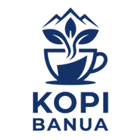

Kopi Susu Gula Aren
Perpaduan espresso robusta pekat dengan susu segar dingin dan legitnya gula aren asli Kalimantan.

Sangrai Segar Tiap Pagi • Sejak 2021
Seduhan hangat maupun dingin dari biji pilihan petani lokal Pengaron yang kami sangrai sendiri setiap pagi demi menjaga aroma cokelat dan karamel terbaik di setiap cangkir.
Berawal dari ruang sangrai rumahan di Jalan Sultan Adam No. 12, Banjarmasin pada tahun 2021, Kopi Banua hadir untuk menyajikan hasil panen biji Robusta petani Pengaron secara segar dengan racikan jujur dan harga bersahabat.
Memakai biji kopi Robusta petik pilihan langsung dari kebun rakyat di kawasan Pengaron, Kabupaten Banjar.
Disangrai dalam takaran terukur setiap pagi sehingga kesegaran bubuk espresso dan seduhan tubruk selalu terjaga.
Menyediakan aneka kopi klasik, racikan susu, hingga kudapan pendamping mulai dari Rp 12.000 per porsi.
Pilih menu kesukaan Anda untuk langsung meneruskan pilihan ke formulir pemesanan di bawah.
Perpaduan espresso robusta pekat dengan susu segar dingin dan legitnya gula aren asli Kalimantan.

Ekstraksi espresso robusta murni dengan air panas, menghadirkan karakter kopi tegas tanpa gula.

Gilingan robusta segar yang diseduh langsung bergaya warung kopi tradisional Banjar yang harum.

Keseimbangan espresso robusta hangat dengan susu kukus dan lapisan krim busa lembut di atasnya.

Seduhan teh hitam pekat dengan krimer susu yang ditarik hingga berbusa lembut, manis dan menghangatkan.

Roti panggang garing beroles mentega dengan isian selai srikaya rumahan, pendamping serasi minum kopi.
| Hari | Jam Buka | Jam Tutup | Keterangan Layanan |
|---|---|---|---|
| Senin – Kamis | 08:00 WITA | 22:00 WITA | Makan di tempat & pesan bungkus |
| Jumat | 08:00 WITA | 22:30 WITA | Istirahat salat Jumat 11:45–13:15 |
| Sabtu – Minggu | 09:00 WITA | 23:00 WITA | Makan di tempat & pesan bungkus |